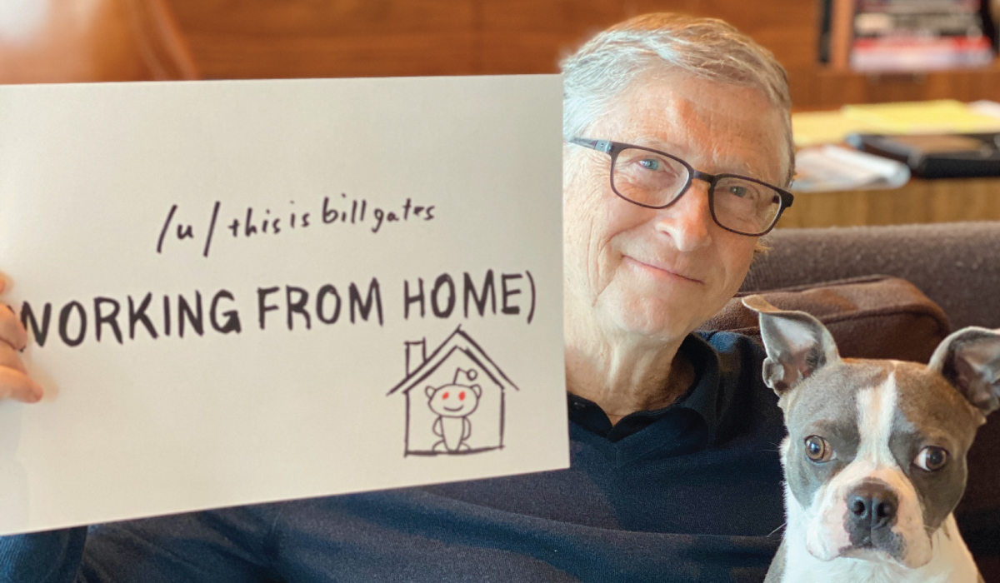

Bill Gates
The Co-founder of Microsoft

Gates in 2020 working from home in COVID19.
Bill Gates, in full William Henry Gates III, (born October 28, 1955, Seattle, Washington, U.S.), American computer programmer and entrepreneur who cofounded Microsoft Corporation, the world's largest personal-computer software company:
Timeline:
- Born
William Henry Gates III October 28, 1955 (age 65) Seattle, Washington, U.S. - Education
Harvard University (dropped out) - Occupation
Software developer investor entrepreneur - Years active
1975–present - Known for
Co-founder of Microsoft - Net worth
US$146.2 billion (As of April 24, 2021) - Title
Co-chairman and co-founder of the Bill & Melinda Gates Foundation Chairman and founder of Branded Entertainment Network Chairman and founder of Cascade Investment Chairman and co-founder of TerraPower Technology advisor of Microsoft - Spouse(s)
Melinda French (m. 1994) - Children
3 - Parents
Bill Gates Sr. (father) Mary Maxwell (mother) - website
billgates.com
Quotes from Gates

“Success is a lousy teacher. It seduces smart people into thinking they can't lose.”
“Your most unhappy customers are your greatest source of learning.”
"Life is not fair; get used to it."
“The Internet is becoming the town square for the global village of tomorrow.”
“If you can't make it good, at least make it look good.”
Learn more about Gates.